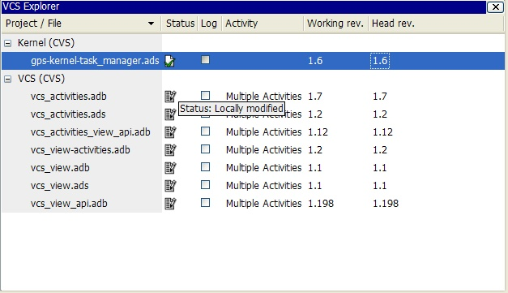
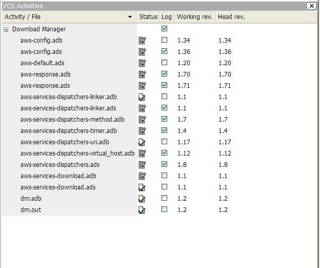
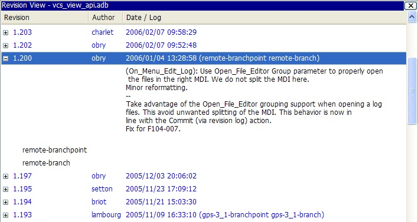

GPS offers the possibility for multiple developers to work on the same project, through the integration of version control systems (VCS). Each project can be associated to a VCS, through the VCS tab in the Project properties editor. The Project Properties Editor.
GPS does not come with any version control system: it uses underlying command-line systems such as Subversion or ClearCase to perform the low level operations, and provides a high level user interface on top of them. Be sure to have a properly installed version control system before enabling it under GPS.
The systems that are supported out of the box in GPS are:
GPS can be setup to auto-detect the actual VCS to use for each project. This is done by selecting Auto in the VCS tab of the Project properties editor. The Project Properties Editor. This is also the default behavior when no VCS is specified in the project.
The standard ClearCase interface, which is built-in and uses a generic GPS terminology for VCS operations.
Note that, at the moment, only Snapshot Views are supported in the ClearCase integration; Dynamic Views are not supported.
Which is fully customizable and uses by default the terminology specific to ClearCase.
Note that, at the moment, only Snapshot Views are supported in the ClearCase integration; Dynamic Views are not supported.
The Concurrent Version System.
GPS needs a corresponding patch command that usually comes with it.
Distributed fast source code management. Support for Git on GPS is partial. Basic commands are supported but the full power of Git (like working with the index) is only available on the command line.
GPS needs a corresponding diff command that usually comes with it.
An experimental plugin for supporting Mercurial.
The Subversion version control system. Note that on Windows this version is intended to be used with Cygwin/Subversion and fully supports the Cygwin path names.
GPS needs a corresponding patch and diff command that usually comes with it.
The Windows native Subversion version control system. The external Subversion commands are expected to be built for the Win32 subsystem. This version does not support Cygwin path names.
GPS needs a corresponding patch and diff command that usually comes with it.
The default VCS that GPS will use is “Auto” by default, and this can be configured through The Preferences Dialog.
It is also possible to add your own support for other version control systems, or modify one of the existing interfaces, see Adding support for new Version Control Systems for more information.
It is recommended that you first get familiar with the version control system that you intend to use in GPS first, since many concepts used in GPS assume basic knowledge of the underlying system.
Associating a VCS to a project enables the use of basic VCS features on the source files contained in the project. Those basic features typically include the checking in and out of files, the querying of file status, file revision history, comparison between various revisions, and so on.
Note: the set-up must make sure that the VCS commands can be launched without entering a password.
The VCS Explorer provides an overview of source files and their status. A file edited in GPS will be automatically added on the VCS Explorer with a Modified status (see below).
The easiest way to bring up the VCS Explorer is through the menu VCS->Explorer. The Explorer can also be brought up using the contextual menu Version Control->Query status on files, directories and projects in the file and project views, and on file editors. The Version Control Contextual Menu.
The VCS Explorer contains the following columns:
Shows the status of the file. This column can be sorted by clicking on the header. The different possible status for files are the following:
The status is not yet determined or the VCS repository is not able to give this information (for example if it is unavailable, or locked).
The file is not known to the VCS repository.
The file corresponds to the latest version in the corresponding branch on the repository.
The file has been added remotely but is not yet updated in the local view.
The file still exists locally but is known to have been removed from the VCS repository.
The file has been modified by the user or has been explicitly opened for editing.
The file has been modified locally and on the repository.

The file has been modified in the repository but not locally.
The file contains conflicts from a previous update operation.
The VCS Explorer supports multiple selections. To select a single line, simply left-click on it. To select a range of lines, select the first line in the range, then hold down the Shift key and select the last line in the range. To add or remove single columns from the selection, hold down the Control key and left-click on the columns that you want to select/unselect. It is also possible to select files having the same status using the Select files same status menu entry. See The Version Control Contextual Menu.
The explorer also provides an interactive search capability allowing you to quickly look for a given file name. The default key to start an interactive search is Ctrl-i.
The VCS contextual menu can be brought up from the VCS explorer by left-clicking on a selection or on a single line. The Version Control Contextual Menu.
The VCS Activities give the ability to group files to be committed together. The set of files can be committed atomically if supported by the version control system used.
The way to bring up the VCS Activities view is through the VCS->Activities menu.
The VCS Activities view contains the following columns:
The VCS Explorer supports multiple selections. To select a single line, simply left-click on it. To select a range of lines, select the first line in the range, then hold down the Shift key and select the last line in the range. To add or remove single columns from the selection, hold down the Control key and left-click on the columns that you want to select/unselect.
There are different contextual menu entries depending on the position on the screen. On an empty area we have a simple contextual menu:
On an activity line the contextual menu is:
On a file line the contextual menu contains:
A global ChangeLog file contains revision logs for all files in a directory and is named ChangeLog. The format for such a file is:
**ISO-DATE *name <e-mail>***
<HT>* **filename**[, **filename**]:
<HT>revision history
where:
The name and <e-mail> items can be entered automatically by setting the GPS_CHANGELOG_USER environment variable. Note that there is two spaces between the name and the <e-mail>:
On sh shell:
export GPS_CHANGELOG_USER="John Doe <john.doe@home.com>"
On Windows shell:
set GPS_CHANGELOG_USER="John Doe <john.doe@home.com>"
Using the menu entry Edit global ChangeLog will open the file ChangeLog in the directory where the current selected file is and create the corresponding ChangeLog entry. This means that the ISO date and filename headers will be created if not yet present. You will have to enter your name and e-mail address.
This ChangeLog file serve as a repository for revision logs, when ready to check-in a file use the standard Edit revision log menu command. This will open the standard revision log buffer with the content filled from the global ChangeLog file.
The revision view is used to display a revision tree for a given file. Each node contains information for a specific revision of the file.
